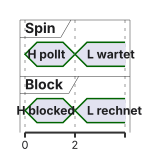
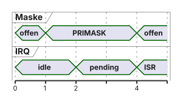
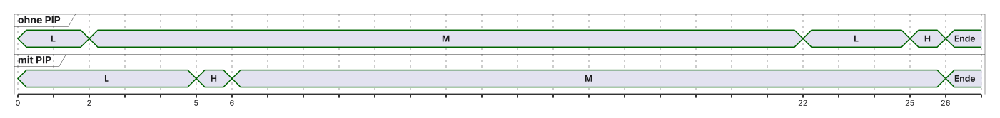

%%{init: {'theme': 'base', 'themeVariables': {'background': '#FFFFFF', 'primaryColor': '#FFFFFF', 'primaryBorderColor': '#E5E5EA', 'primaryTextColor': '#1D1D1F', 'lineColor': '#86868B', 'actorBkg': '#FFFFFF', 'actorBorder': '#E5E5EA', 'signalColor': '#86868B'}}}%%
sequenceDiagram
participant HW as Hardware
participant ISR as ISR
participant K as Kernel
participant W as Worker
Note over W: wartet, Semaphor leer
HW->>ISR: Ereignis
ISR->>K: osSemaphoreRelease
K-->>W: Ready
Note over ISR: ISR endet, dann PendSV
W->>K: Acquire ok
W->>W: eine Verarbeitung
04 · Synchronisation und Ressourcenverwaltung
Race Conditions, Mutexe, Deadlocks und Priority Inversion · EZS · DHBW Stuttgart
Prof. Dr.-Ing. Daniel Klünder
Willkommen auf der dunklen Seite der Echtzeit!
- Vierter Termin: geteilte Ressourcen auf einem FreeRTOS-Kern (CM4)
- Präemption ist nützlich und erzeugt konkurrierende Zugriffe
- Heute: Race, Semaphor, Mutex, Deadlock, Prioritätsinversion
- Ein Mutex dieses Kernels schützt nicht den CM7, DMA oder fremde ISRs
Agenda für heute
- Lost Update und was „atomar“ hier heißt
- Spin, IRQ-Maske, Blockieren
- Semaphor und Mutex, inklusive ISR-Regeln
- Deadlock und Prioritätsinversion mit Zahlen
- Pathfinder als belegte Fallstudie, dann Labor
Recap: Die Macht der Präemption
- Wechsel nicht nur am SysTick: auch ein Ereignis oder eine IRQ kann einen Thread bereit machen
- Im üblichen CM4F-Port führt PendSV den Kontextwechsel aus
- Auf einem Kern rechnen nicht zwei Threads gleichzeitig
- „Gleichzeitig“ heißt hier: verschachtelt, mit eigenen Registern
Motivation: Der Kampf um den UART
- Zwei Threads wollen je eine ganze Zeile ausgeben
printfschreibt nicht universell Byte für Byte in ein Datenregister- Abhängig von Retargeting, Puffer, Bibliothekslock, HAL und Transfermodus
- Möglich: vermischte Zeichen,
HAL_BUSY, verlorene Ausgabe — nicht „immer Buchstabensalat“
Das visuelle Chaos
Angenommene byteweise Retarget-Funktion, ohne gemeinsamen Schutz:
| Schritt | Temp | Hum | Leitung |
|---|---|---|---|
| 1 | T=21 |
T=21 |
|
| 2 | H=40\n schiebt sich dazwischen |
T=21H=40 |
|
| 3 | Rest C\n |
Zeile zerrissen |
Geschützt: formatieren im privaten Puffer, dann Acquire, ganze Nachricht, Abschluss, Release.
Das Problem geteilter Ressourcen
- Fehler ist schon ein verlorenes Update, kein nötiger HardFault
volatilemacht Read-Modify-Write nicht atomar- Ein Mutex schließt die beteiligten Threads aus, nicht jede IRQ
- Lesen gehört dazu, wenn mehrere Felder zusammen einen Snapshot bilden
Lernziele des heutigen Tages
- Ein verlorenes Update an Registern und RAM erklären
- Spin, Maskierung und Blockieren nach dem Konkurrenten wählen
- Semaphor-Token und Mutex-Ownership unterscheiden
- Dieselbe Inversion ohne und mit PIP nachrechnen
- Pathfinder als Vereinfachung einer belegten Ursache einordnen
Was ist eine Race Condition?
- Das Ergebnis hängt von der Verschränkung nicht synchronisierter Zugriffe ab
- Auf einem Kern genügt eine Präemption zwischen Lesen und Schreiben
- Betroffene: Threads untereinander, oder Thread und ISR, oder ein zweiter Busmaster
- Der Mechanismus muss zu diesen Konkurrenten passen
Das simpelste Code-Beispiel
- Vereinfachtes Compilerbild, keine Garantie für genau drei Befehle
- Ein einzelnes atomares Load oder Store ist noch kein atomares
++
Der Blick unter die Haube (Assembler)
Lehrbild, nicht das universelle Listing:
LDR: RAM nach RegisterADD: nur das RegisterSTR: Register nach RAM
Zwischen den Befehlen kann der Kern wechseln. Das Register von A bleibt in As Kontext, nicht in Bs.
Visualisierung der Datenkorruption
Start counter = 5. Zwei Inkremente, erwartet 7.
| Zeit | aktiv | Register A | Register B | RAM |
|---|---|---|---|---|
| 1 | A liest | 5 | — | 5 |
| 2 | A addiert | 6 | — | 5 |
| 3 | Wechsel, B liest | 6 (gesichert) | 5 | 5 |
| 4 | B schreibt | 6 | 6 | 6 |
| 5 | A schreibt | 6 | — | 6 |
Geschützt, gleiche Starts: A liest und schreibt fertig (RAM 6), danach B schreibt 7.
Atomarität (Die Lösung des Problems)
- „Atomar gegenüber den relevanten Zugriffen“ heißt: kein sichtbarer Zwischenstand für diese Konkurrenten
- Das ist nicht „keine Unterbrechung überhaupt“
- Unter einem Mutex dürfen fremde Threads und IRQs weiterlaufen
- Eine kurze IRQ-Maske ist ein anderes Werkzeug mit anderem Schutzradius
Definition der Begriffe
| Begriff | hier |
|---|---|
| Kritischer Abschnitt | Zugriffe, die zusammenpassen müssen |
| Mutex | Ausschluss von Threads, mit Owner |
| Semaphor | Tokenzahl, ohne Owner |
| Spin | aktiv pollen, bleibt Running |
| Blocked | keine eigenen Threadbefehle; der Kern kostet weiter Zeit |
Entscheidung, kurz:
| Konkurrent | Mittel |
|---|---|
| Thread/Thread, Ressource | Mutex |
| ISR signalisiert Thread | Semaphor oder Thread-Flag |
| ein Zähler, geprüft | Atomic oder sehr kurze Sektion |
| mehrere gleiche Plätze | Counting Semaphore |
| Nachricht mit Daten | Queue (nächster Termin) |
Schutzidee 1: Der Spinlock (Polling)
Absichtlich falsch:
- Ein korrektes Test-and-Set beseitigt diese Race
- Es beseitigt nicht das Fortschrittsproblem auf einem präemptiven Kern
- Für den Laborfall (H wartet auf L) ist Spin die falsche Wahl
- Nicht jedes SMP- oder Bare-Metal-Szenario ist damit verboten
Warum Spinlocks im RTOS crashen
L hält den Lock. H wird bereit und pollt.
- Spin: H bleibt Running, L ist nur Ready und gibt nicht frei
- IRQs können trotzdem laufen
osThreadYieldin H gibt L nicht die CPU, solange H höher und Ready bleibt- Blockieren: H wird nach erfolglosem Acquire Blocked, L kann weiterrechnen
- Das löst noch nicht die spätere Störung durch Medium

Schutzidee 2: Interrupts sperren
- Eine kurze, budgetierte Sperre kann zu harten Fristen passen
- Gezählt wird die Dauer des Abschnitts plus Ein- und Austritt, nicht „ein Takt“
- Lehrwerte: 2 µs bei Frist 100 µs kann passen; 5 ms bei derselben Frist nicht
- Im ungünstigen Fall kommt die restliche Maskierungszeit zur übrigen Latenz hinzu
__disable_irq/__enable_irq(PRIMASK) nicht mit den FreeRTOS-Makros gleichsetzen- Der CM4F-Port maskiert über BASEPRI bis zu einer Schwelle und hebt den vorigen Stand wieder auf
Die Grenzen der Interrupt-Sperre

- Pending heißt: die IRQ wartet, DMA muss damit nicht stehen
- In der maskierten Sektion kein Delay, kein
printf, kein blockierendes API - Task- und ISR-Makros des Ports nicht vertauschen
Die „richtige“ Lösung: OS-Blocking
- Für Thread gegen Thread: blockieren statt polieren
- Der Besitzer muss laufen dürfen, sonst gibt er nicht frei
- PIP kommt erst, wenn ein höherer Thread am selben Mutex wartet
- Vorher hat L nur seine eigene Priorität
Zusammenfassung Block 1
- Verlorenes Update: Endwert 6 statt 7
- Spin kann den Besitzer verdrängen
- IRQ-Sperre ist ein Latenzbudget, kein Tabu und kein Freifahrtschein
- Mutex: beteiligte Threads, nicht der ganze Chip
Was ist ein Semaphor?
- Zähler von 0 bis
max_count Acquireverringert,Releaseerhöht- Kein gespeicherter Owner: ein anderer Thread darf
Releaserufen - ISR:
osSemaphoreReleaseist vorgesehen;Acquirenur mit Timeout 0 - Zusätzlich muss die NVIC-Priorität die Syscall-Schwelle einhalten
- „ISR-safe“ heißt nicht „aus jeder Priorität“
Typ 1: Counting Semaphore (Zähl-Semaphor)
Pool mit osSemaphoreNew(3, 3, NULL):
| Aktion | count |
|---|---|
| Start | 3 |
| A nimmt | 2 |
| B nimmt | 1 |
| C nimmt | 0 |
D mit timeout = 0 |
0, Fehler, kein Zugriff |
| B gibt frei | 1, ein Wartender kann nehmen |
- Es entsteht kein zweiter freier Platz
- Der Zähler ist Verfügbarkeit, nicht die Identität eines Platzes
- Höchste Priorität unter den Wartenden, soweit das Backend so wählt; keine Fairnessgarantie
Releasebei vollem Zähler kannosErrorResourceliefern und erzeugt kein weiteres Token
Typ 2: Binary Semaphore (Binärer Semaphor)
max_count = 1- Ressource anfangs da:
osSemaphoreNew(1, 1, NULL) - Ereignis, noch nichts passiert:
osSemaphoreNew(1, 0, NULL) - Zwei Releases vor dem nächsten Acquire: der zweite scheitert am vollen Zähler
- Zwei Hardwareereignisse werden damit nicht automatisch zweimal bearbeitet
CMSIS-API für Semaphoren
timeout = 0: sofortiger Status, kein Blockieren- endliche Tickzahl: Fehlerpfad Pflicht
osWaitForever: kann dauern; das ist eine Entwurfsentscheidung
Was exakt passiert bei Acquire / Release?
| count | Acquire | Release |
|---|---|---|
| > 0 | zählt herunter, osOK |
zählt hoch, bis max |
| 0, Warten | Thread Blocked | weckt einen Wartenden oder zählt auf 1 |
| = max | — | osErrorResource, Zähler bleibt |
Der Hauptanwendungsfall: Signalisierung
- Kein
printf, kein Mutex, kein blockierendes Warten in der ISR - Der Worker läuft erst, wenn die ISR fertig ist und seine Priorität ihn wählen lässt
- Die CPU muss vor dem Ereignis nicht Idle gewesen sein
Sequenzdiagramm: Signalisierung aus der ISR
Semaphoren haben kein „Ownership“
- Token merkt sich nicht, wer ihn nahm
- B darf ein Release ausführen, auch wenn A genommen hat
- Das ist für Ereignisse nützlich und für eine exklusive Ressource gefährlich
- Deshalb für den UART-Schutz ein Mutex, nicht dieses Token
Die Rettung: Der Mutex (Mutual Exclusion)
- Zustände: frei, oder Owner = A
- B kann nicht freigeben: die API liefert einen Fehler
- Das ist keine Hardware-Sperre gegen wilde Speicherzugriffe
- Nach erfolgreichem Acquire zugreifen, genau einmal passend freigeben
- In den gezeigten Abschnitten kein vermeidbares
osDelay: der Mutex maskiert keine IRQs, verlängert aber die Sperrdauer
CMSIS-API für Mutexe
- Acquire-Fehler: Ressource nicht anfassen, nichts freigeben
osMutexAcquire/osMutexReleasesind in CMSIS nicht aus der ISR erlaubt- Rekursion ist ein eigenes Attribut
osMutexRecursive - Zweites Acquire ohne Rekursion: bei
osWaitForeverSelf-Deadlock, bei Timeout ein Fehler
Sonderfälle in der C-Programmierung
Rekursion, Owner A:
| Aktion | Zähler |
|---|---|
| frei | 0 |
| A acquire | 1 |
| A acquire nochmal | 2 |
| A release | 1 |
| A release | 0, jetzt darf B |
- B kommt erst bei 0 dran
- Ohne
osMutexRecursiveist die zweite Zeile kein harmloses Verschachteln
Best Practices für Mutexe
- Ein Mutex, eine Invariante, ein Name
- Alle konkurrierenden Threadzugriffe, auch die lesenden
- Kurzer Abschnitt; Rechnung vor dem Acquire, Warten dahinter
- Keine zweite Sperre in umgekehrter Reihenfolge
- Kein Mischen von
osMutex*undxSemaphore*auf demselben Objekt
Rekursive Mutexe
- Nur wenn dieselbe Aufgabe dasselbe Schloss erneut braucht
- Nicht als Ersatz für eine klare Aufrufstruktur
- Jedes Acquire braucht sein Release
- Prioritätsvererbung und Rekursion sind unabhängig wählbare Bits; der FreeRTOS-Adapter folgt den Bits nicht in jedem Punkt
Zusammenfassung: Mutex vs. Binärer Semaphor
| Mutex | Binärer Semaphor | |
|---|---|---|
| Gegenstand | Ressource mit Owner | Token oder Ereignis |
| Release durch anderen | API-Fehler | möglich |
| ISR | weder Acquire noch Release | Release ja, Acquire nur Timeout 0 |
| PIP | gewünscht und im Adapter oft immer an | nein |
| Start | frei | 0 oder 1, je nach Bedeutung |
Die Katastrophe: Wenn Locks böse werden
- Deadlock: eine Gruppe wartet zyklisch
- Andere Threads und IRQs können weiterlaufen
- „System freeze“ ist eine mögliche Folge, kein Zwang
- Prioritätsinversion ist kein Deadlock: der Besitzer könnte weiterrechnen, wird aber verdrängt
Der Deadlock (Verklemmung)
T1 hält A und will B. T2 hält B und will A.
| Pfeil | Bedeutung |
|---|---|
| Task → Ressource | wartet auf |
| Ressource → Task | zugeteilt an |
Zyklus: T1 → B → T2 → A → T1.
Ablauf: T1 nimmt A, T2 nimmt B, T2 wartet auf A, T1 wartet auf B. Beide Locks sind gehalten, beide Threads Blocked.
Die vier Coffman-Bedingungen
- Mutual exclusion: die Ressource gehört einem
- Hold and wait: halten und auf die nächste warten
- No preemption: niemand nimmt die Ressource zwangsweise weg — das ist nicht „keine CPU-Präemption“
- Circular wait: der Zyklus oben
Alle vier zusammen, in diesem Lockmodell.
Vermeidung von Deadlocks
Globale Ordnung: immer A vor B.
- T2 wartet auf A und besitzt B noch nicht
- T1 kann B nehmen, dann beide freigeben
- Rang auch für Sperren, die eine Bibliothek innen nimmt
- Timeout nur mit Rollback; allein verhindert er keine inkonsistenten Daten und keinen Livelock
- PIP öffnet keinen Zyklus
Der subtile Feind: Priority Inversion
Lehrmodell, ein Kern, Kosten der API vernachlässigt, H > M > L, keine weiteren Threads:
- L ab \(t = 0\), nimmt den Lock, braucht \(5\,\mathrm{ms}\) CPU bis zum Release
- H ab \(t = 1\), will denselben Lock, danach \(1\,\mathrm{ms}\) CPU; \(D_H = 10\,\mathrm{ms}\), absolut \(t = 11\,\mathrm{ms}\)
- M ab \(t = 2\), \(20\,\mathrm{ms}\) CPU, fasst den Lock nicht an
- Vorher sind H und M nicht Ready
- Der kurze Acquire-Versuch von H zählt nicht als CPU-Zeit
Die Anatomie der Inversion (Schritt 1 und 2)
Ohne PIP, binärer Semaphor als Ressourcentoken:
- \(0\)–\(2\,\mathrm{ms}\): L läuft und hält; bei \(1\,\mathrm{ms}\) blockiert H
- \(2\)–\(22\,\mathrm{ms}\): M läuft, L ist nur Ready
- \(22\)–\(25\,\mathrm{ms}\): L restliche \(3\,\mathrm{ms}\), Release
- \(25\)–\(26\,\mathrm{ms}\): H rechnet
Wartezeit von H auf den Lock: \(24\,\mathrm{ms}\). Antwortzeit \(R_H = 25\,\mathrm{ms}\). Fertig bei \(26\,\mathrm{ms}\), nach der Deadline \(11\,\mathrm{ms}\).
Medium ist das anschauliche Extra, nicht die Bedingung jeder Inversion. „Unbegrenzt“ gilt, wenn Medium dauerhaft Ready bleibt. Bei diesem begrenzten Job ist die Zeit endlich und trotzdem zu lang.
Die Anatomie der Inversion (Schritt 3 und 4)
Mit PIP, ein Mutex, nur dieser Lock:
- \(0\)–\(1\,\mathrm{ms}\): L mit eigener Priorität
- ab \(1\,\mathrm{ms}\): H blockiert, L erbt H
- \(1\)–\(5\,\mathrm{ms}\): L rechnet weiter, obwohl M bei \(2\,\mathrm{ms}\) Ready wird
- Release bei \(5\,\mathrm{ms}\), H rechnet \(5\)–\(6\,\mathrm{ms}\)
- M danach \(6\)–\(26\,\mathrm{ms}\)
Wartezeit \(4\,\mathrm{ms}\), \(R_H = 5\,\mathrm{ms}\), fertig bei \(6\,\mathrm{ms}\), vor \(t = 11\,\mathrm{ms}\).
Die Erbschaft beginnt bei Hs Warten, nicht schon ab \(t = 0\). PIP kürzt die Medium-Lücke. Es streicht nicht Ls restliche kritische Sektion.
Visualisierung der Priority Inversion

| ohne PIP | mit PIP | |
|---|---|---|
| H wartet auf den Lock | 24 ms | 4 ms |
| \(R_H\) | 25 ms | 5 ms |
| fertig | 26 ms, zu spät | 6 ms, rechtzeitig |
Warum ist das so katastrophal?
- H hält seine angenommene Frist nicht, obwohl H die höchste Basispriorität hat
- Die Ursache ist der Lock plus die Verdrängung von L, nicht „der Scheduler ignoriert H“
- Bei unbeschränktem Medium gibt es keine endliche Schranke mehr
- Bei bekanntem Medium bleibt die Zeit endlich und kann trotzdem die Deadline verfehlen
Die reale Katastrophe: Mars Pathfinder (1997)
- Didaktische Vereinfachung, keine Boardmessung und kein Patchlisting
- Quelle: Glenn E. Reeves, Bericht vom 15.12.1997
- VxWorks-„mutex semaphore“ nicht mit einem FreeRTOS-Binary-Semaphore gleichsetzen
- Keine belegte Funkstrecke und kein „Schutz war generell aus“ als ganze Geschichte
Die Architektur des Pathfinder
- Niedrigpriorer ASI/MET-Pfad und der zeitkritische
bc_dist-Pfad teilen den Mutex im select/pipe-IPC - Mittelpriore Arbeit kann ASI/MET verdrängen, während der Mutex gehalten wird
bc_distverpasst die Fristbc_schederkennt das und stößt den Resetpfad an
Was auf dem Mars passierte
- Resets und Fristfehler
- Trace, auf der Erde nachgestellt
- Lock-Abhängigkeit benannt
- Getestete Änderung, wie diese Mutexe erzeugt werden
- Ein reiner Hardware-Watchdog als einzige Erklärung ist zu grob
- Der valide Patch änderte eine globale Option für die Erzeugung dieser Mutexe
Die Lösung: Wie rettete die NASA die Sonde?
- Priority Inheritance für die betroffenen Mutexe einschalten
- Das kürzt die zusätzliche Verzögerung, analog zum Lehrbild
- Es ist kein Freibrief für beliebige kritische Abschnitte
- Tracing war der Weg zur Ursache, nicht die Vererbung allein
Das Priority Inheritance Protocol (PIP)
- H wartet am Mutex, den L hält → L bekommt vorübergehend Hs Dringlichkeit
- M kann L in diesem Fenster nicht mehr verdrängen
- Nach dem Release läuft H, danach M
- Mehrere Mutexe: FreeRTOS-Vererbung vereinfacht; nicht „bei jedem Release sofort Low“ behaupten
- PIP behebt keinen Deadlock und keine allgemeine Starvation
Wie PIP das Mars-Problem löste
- Im Lehrbild: H fertig bei 6 ms statt 26 ms
- Auf dem Pathfinder: die Mutexe des betroffenen Pfads erben,
bc_distwird nicht mehr durch die mittelpriore Verdrängung über die Frist hinaus festgehalten — soweit der Reeves-Bericht die Ursache trägt - Unbegrenzte mittelpriore Last bliebe ein anderes Problem
Visualisierung: Priority Inheritance („Die Prio-Beule“)
Effektive Priorität von L:
- \(0\)–\(1\,\mathrm{ms}\): Low
- \(1\)–\(5\,\mathrm{ms}\): geerbt von H
- ab Release: wieder Low, H läuft
M ist ab \(2\,\mathrm{ms}\) Ready und läuft erst ab \(6\,\mathrm{ms}\).
Achtung: Mutex vs. Semaphore in FreeRTOS
- Für „ohne PIP“ einen binären Semaphor mit
initial_count = 1verwenden - Für „mit PIP“ einen Mutex mit gesetztem
osMutexPrioInherit - Im genannten Adapter das Bit nicht als Abschaltknopf verstehen
- Alle New/Acquire/Release-Aufrufe und Typen wechseln, nicht nur den Handle-Namen
Laborvorbereitung: Chaos am UART
Zwei getrennte Versuche:
- Nachrichtenschutz: überlappende Zeilen ohne und mit Mutex
- Inversion: gleicher CPU-Bedarf, einmal Semaphor, einmal Mutex
Saubere Zeilen beweisen den Schutz im beobachteten Lauf, keine Deadline.
115200 Baud, 8N1, 100 Byte, synthetisch:
\[100 \times 10 / 115200 \approx 8{,}68\,\mathrm{ms}\]
reine Übertragungszeit, plus Software und Warten. Der Lock kann lange gehalten sein, obwohl der C-Code kurz aussieht.
Labor-Schritt 2: Die Absicherung
- Privater Puffer, dann Acquire, ganze Ausgabe, Abschluss, Release
osDelayaußerhalb- Alle Writer, auch Bibliothekswege, wenn sie denselben UART benutzen
- Status von Acquire und von der Ausgabe prüfen
- Beobachtung offen lassen: Mischtext,
HAL_BUSYoder bereits serialisierte Bibliothek
Labor-Schritt 3: Die Sabotage (Inversion)
- L
osPriorityNormal, MosPriorityAboveNormal, HosPriorityHigh, sofern der Wrapper das nicht klemmt - H und M starten blockiert an eigenen Gates, nicht am Test-Lock
- L nimmt den Test-Lock zuerst und meldet das
- Danach ein begrenzter CPU-Abschnitt, kein
osDelayals Ersatz für diese Last - M arbeitet ein begrenztes Pensum und blockiert dann
- Endlosschleife nur als eigener, beendbarer Grenzfall: nach PIP-Release kann L weiter verhungern
Labor-Schritt 4: Die Heilung
- Dieselben Freigaben und dieselbe CPU-Arbeit
- Mutex statt Semaphor, Attribute gesetzt, API vollständig getauscht
- Erwartung im Lehrsinn: H wartet nur noch auf Ls Rest, nicht auf ganz M
- Messen: L-Acquire, H-Wunsch, M-Start und -Ende, L-Release, H-Erfolg, H-Ende
printferst nach dem Lauf; GPIO, Trace oder ein geschützter RAM-Puffer- DWT
CYCCNTnur wenn der Zähler läuft und der Takt bekannt ist; er zählt auch fremde Zeit
UART, IT und DMA
- Blockierend: Timeout und Release auf jedem Pfad
- IT/DMA: Ende ist nicht die Rückkehr von
HAL_UART_Transmit_IT - Abschlusssignal in den Owner-Thread, dort Release
- Ein Logger-Task mit begrenzter Queue ist ein späteres Muster, kein Echtzeitbeweis
Auswertungsblatt
| Feld | ohne PIP | mit PIP |
|---|---|---|
| L Owner vor H? | ||
| H blockiert am Lock? | ||
| M-CPU-Bedarf gleich? | ||
| Wartezeit H | ||
| \(R_H\) | ||
| Deadline gehalten? | Lehrfrist nur im Modell | |
| L nach Release noch verhungert? |
Zusammenfassung des Tages
- Lost Update: 6 statt 7;
volatilegenügt nicht - Semaphor zählt Token; Mutex merkt sich den Owner
- Deadlock ist ein Ressourcenzyklus; Coffman-„No preemption“ meint die Ressource
- Ohne PIP: Wartezeit 24 ms, \(R_H = 25\,\mathrm{ms}\); mit PIP: 4 ms und 5 ms
- Pathfinder: select/pipe-Mutex, Frist von
bc_dist, Reset überbc_sched, Reeves 15.12.1997
Ausblick auf Termin 5
- Queues transportieren Daten, nicht nur ein Token
- ISR schreibt nicht blockierend in die Queue
- Der Mutex von heute bleibt für den gemeinsamen Puffer zuständig, wenn die Queue ihn nicht ersetzt
Quellen
- Arm CMSIS-RTOS2: Mutex und Semaphore
- CMSIS-FreeRTOS Technical Data der eingesetzten Version, nicht blind
main - FreeRTOS-Kernel-Book, Ressourcen und Inheritance
- CM4F-
portmacro.h: BASEPRI, kritische Sektionen - CMSIS-Core: PRIMASK und BASEPRI
- GCC
__atomic, falls ein Atomic-Beispiel gebaut wird - Glenn E. Reeves, What really happened on Mars?, 15.12.1997